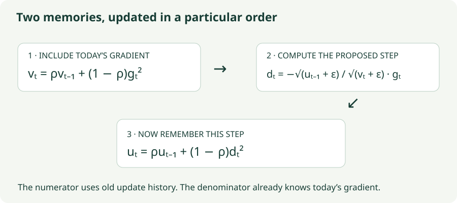

Adadelta: Learning an Update Scale
Track two running averages and derive a coordinate-wise update from gradient and step history.
SGD asks you to choose a global step scale. Momentum remembers a direction. Adadelta asks a different question: how large have recent updates been in this coordinate, relative to recent gradients? It builds a scale from two histories and uses that scale on the current gradient.
The method is easiest to understand in the order its state actually changes. One history includes today’s gradient. The other must still contain yesterday’s updates when today’s update is computed.
1. The two quantities we remember
For each parameter coordinate, store $v_t$, an exponential average of squared gradients, and $u_t$, an exponential average of squared proposed updates. Both start at zero. With $0\le\rho<1$ and a small $\epsilon>0$, the original unit-multiplier update is
Every square, division, and square root here is coordinate-wise. A million parameters means a million independent pairs of history values. There are no dense matrix products and no signed momentum buffer in this basic method.
The denominator measures a recent gradient magnitude. Dividing by it reduces sensitivity to whether one coordinate’s raw derivatives are numerically larger than another’s. The numerator then supplies a recent update magnitude. Without that numerator, a normalized gradient would still need some external scale to decide how far the parameter should move.

2. Why this ratio is a useful construction
Imagine a coordinate whose gradients have recently been about 20 in magnitude while its updates have been about 0.02. Ignoring epsilon, the ratio of RMS magnitudes is approximately $0.02/20=0.001$. A new gradient of 20 produces an update near $-0.02$. A temporary gradient spike enlarges the denominator immediately, while the numerator responds only after that step. This timing restrains the spike’s influence.
A dimensional argument makes the same construction intuitive. If a gradient has units “loss per parameter,” the ratio “update magnitude divided by gradient magnitude” has the units needed to convert a gradient into a parameter displacement. In SGD, those units are supplied by the learning rate. Adadelta estimates a coordinate-specific conversion from history.
This is an intuition for the design, not a proof that its ratio equals inverse curvature. A Hessian describes how the gradient changes with the parameters; the two running averages do not measure that derivative. Epsilon and initialization also break exact scale invariance, so changing units can still affect early behavior.
3. Compute the first step, including epsilon
Use one coordinate with $g_1=2$, $\rho=0.9$, $\epsilon=10^{-6}$, and $u_0=v_0=0$. First update the gradient history:
The numerator is $\sqrt{0+10^{-6}}=0.001$, while the denominator is $\sqrt{0.4+10^{-6}}\approx0.632456$. Therefore
Only now update the step history: $u_1=0.1d_1^2\approx10^{-6}$. At the next step, the numerator can use this value. We did not put $u_1$ in the first numerator, because $u_1$ itself depends on the first update.
Epsilon does more than prevent division by zero. With zero update history and no epsilon, the numerator would be zero and the optimizer could remain stuck. When $(1-\rho)g_1^2\gg\epsilon$, the first update’s magnitude is approximately $\sqrt{\epsilon/(1-\rho)}$. Its size can therefore be strongly influenced by epsilon.
4. Why use a moving average?
An all-time accumulator of squared gradients only grows. That is the denominator idea in Adagrad: repeatedly active coordinates receive progressively smaller effective step scales. Adadelta instead forgets old squared gradients geometrically. A gradient from $k$ steps ago contributes a factor proportional to $\rho^k$.
If gradients become smaller, the denominator can eventually shrink. If they grow, it can adjust upward. Increasing $\rho$ slows both responses. The often-used quantity $1/(1-\rho)$ is a rough memory scale, not a literal window length: even older values retain some weight.
Squaring removes the sign. Alternating gradients $+2,-2,+2,-2$ feed the same squared-gradient history as $+2,+2,+2,+2$. This optimizer remembers magnitude, whereas momentum remembers signed direction. That distinction matters when interpreting what “history” is doing.
5. Lab: expose both histories
The lab uses the same rotated quadratic dataset as the preceding chapters. Its larger teaching default $\epsilon=10^{-3}$ makes movement visible in 150 steps; it is not a training recommendation. You can switch to $10^{-6}$ and inspect how much the initial displacement changes.
Adadelta’s numerator and denominator
The readout shows the old RMS update used in the numerator, the new RMS gradient in the denominator, and both updated state buffers.
- Watch the start: take one step with each epsilon value. The numerator is initially $\sqrt\epsilon$ in both coordinates.
- Change memory: compare $\rho=0.5$ and $0.95$ with identical settings. Inspect the buffer values, not only the trajectory.
- Rotate the valley: compare rotation 0° and 45°. Coordinate-wise scaling cannot directly represent all the off-diagonal coupling of a rotated narrow valley.
6. “No learning rate” needs a precise meaning
The original rule applies $d_t$ directly, so it does not need a separate global multiplier. Some implementations expose one anyway. This chapter’s optional multiplier $\eta$ follows the PyTorch convention: apply $w_t=w_{t-1}+\eta d_t$, but accumulate $d_t^2$ into $u_t$, before that external multiplier.
For $\eta=1$, this is the original rule above. For other values, $u_t$ tracks the proposed update rather than the actual parameter displacement. Accumulating $(\eta d_t)^2$ would define different dynamics. The lab labels the control “step multiplier” and uses the former convention.
# Element-wise operations; v and u persist across batches.
v = rho * v + (1 - rho) * grad.square()
direction = -(u + eps).sqrt() / (v + eps).sqrt() * grad
u = rho * u + (1 - rho) * direction.square()
parameter += lr * direction
optimizer = torch.optim.Adadelta(
model.parameters(), lr=1.0, rho=0.9, eps=1e-6,
weight_decay=0
)Two state scalars per parameter are required, excluding weights and gradients. Save both when checkpointing. Adding epsilon inside a square root is different from adding it outside: $\sqrt{v+\epsilon}$ and $\sqrt v+\epsilon$ have different values and dimensional meanings.
7. Questions worth answering
No, not in this basic Adadelta rule. The history changes the scale, but it still multiplies the current gradient. A zero gradient gives a zero update. Momentum can behave differently because it stores signed direction.
No. The decay, epsilon, optional multiplier, loss scaling, and data preprocessing all affect behavior. Inspect actual update norms and validation results.
Only if the other quantities are held fixed. A coordinate with a smaller current gradient can also have a much smaller denominator, changing the ratio. Inspect the whole update, not the gradient alone.
Sources
Zeiler, ADADELTA: An Adaptive Learning Rate Method introduces the two-history rule. PyTorch Adadelta documents the external multiplier convention. The numerical calculations and interactive experiment are constructed for this chapter.